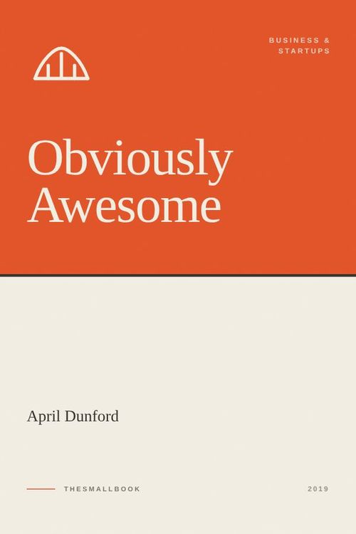

Library › Authors › April Dunford
Books by April Dunford
April Dunford has one book in the library. Every book here is read down to the big idea, the lessons, the lines worth keeping and the actions worth taking. Start with the summary, then buy the full book if it earns a place on your shelf.

Obviously Awesome: How to Get Product Positioning Right
2019 · 9 min · 8 lessons
April Dunford's practical positioning method: choose your competitive alternatives, unique attributes, value, and market frame deliberately, before the market chooses wrong for you.
Dunford (who has positioned dozens of products) reframes positioning as context-setting: the market needs a frame of reference to value your product, and if you don't set it, customers set it wrong (usually against your worst comparison). Her 10-step method: list your real competitive alternatives (including do-nothing), catalog your secret sauce (what you have that alternatives don't), map attributes to value, pick the customers who care most, and CHOOSE your market frame (the category you compete in: comparing a...
Lessons in the summary
- Customers Judge You Against Whatever Frame They Bring
- Start From Real Competitive Alternatives (Including Do-Nothing)
- Secret Sauce: What You Have That Others Can't Cheaply Copy
- Pick the Customers Who Care Most
- Choose Your Market Category Deliberately
- The Tells: How to Know Your Positioning Is Broken
- Positioning Is Temporary by Design
- Positioning Is a Team Sport That Starts With the Founder
Lines worth keeping
- Positioning is the act of deliberately defining the context so your value is obvious.
- Your prospects can't value what they can't compare.
- If your product feels 'hard to explain', the problem is almost never the product. It's the frame.
Questions April Dunford helps answer
Read nearby authors next
- Devdutt Pattanaik 5 books
- Rashmi Bansal 5 books
- Robin Sharma 5 books
- Chetan Bhagat 4 books
- Seth Godin 4 books
- Alex Hormozi 3 books
- Gurcharan Das 3 books
- Nir Eyal 3 books
Questions April Dunford helps answer
Where should I start with April Dunford? Start with Obviously Awesome: How to Get Product Positioning Right: April Dunford's practical positioning method: choose your competitive alternatives, unique attributes, value, and market frame deliberately, before the market chooses wrong for you.